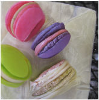
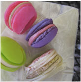

Generative Diffusion Prior for
Unified Image Restoration and Enhancement
CVPR 2023
Abstract
Existing image restoration methods mostly leverage the posterior distribution of natural images. However, they often assume known degradation and also require supervised training, which restricts their adaptation to complex real applications. In this work, we propose the Generative Diffusion Prior (GDP) to effectively model the posterior distributions in an unsupervised sampling manner. GDP utilizes a pre-train denoising diffusion generative model (DDPM) for solving linear inverse, non-linear, or blind problems. Specifically, GDP systematically explores a protocol of conditional guidance, which is verified more practical than the commonly used guidance way. Furthermore, GDP is strength at optimizing the parameters of degradation model during the denoising process, achieving blind image restoration. Besides, we devise hierarchical guidance and patch-based methods, enabling the GDP to generate images of arbitrary resolutions. Experimentally, we demonstrate GDP’s versatility on several image datasets for linear problems, such as super-resolution, deblurring, inpainting, and colorization, as well as non-linear and blind issues, such as low-light enhancement and HDR image recovery. GDP outperforms the current leading unsupervised methods on the diverse benchmarks in reconstruction quality and perceptual quality. Moreover, GDP also generalizes well for natural images or synthesized images with arbitrary sizes from various tasks out of the distribution of the ImageNet training set.
Framework
Overview of GDP. Illustration of our GDP for unified image recovery.
HDR recovery
HDR recovery task might contain one LDR image or three LDR images (Short, Medium, and Long). Here, we only show LDR-long image and restored image. Note that our GDP, as a multi-guidance method, can also restore images with more than three images as guidance.
Low-light Enhancement
GDP can be utilized for low-light enhancement for synthesized images or real-world images. Due to the degradation model being optimized during the sampling process, users do not need to give the specific degradation model. Our GDP can also be extended to high-light image enhancement.
Brightness Control
By the merit of exposure control loss, GDP can enhance the low-light images according to the needs of users. Users can control the lightness of recovered images by giving a scale of exposure control loss.
Colorization
With the help of colorization loss, GDP can generate images with natural color.


4x Super-Resolution
GDP generates perceptually convincing images for 4× super-resolution.


Deblur
In our experiments, we exploit GDP to tackle the gaussian blur. Motion blur can also be stuied in our method.
25% Inpainting

Inpainting with lorem
Inpainting with lolcat
 
